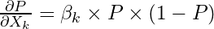
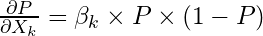

148 Regression, Logistic
TOC
- Misc
- Interpretation
- Assumptions
- Diagnostics
- Marginal Effects
- Probit
- Visualization
Misc
- Also see Classification
- Packages
- {glmnet}
glmneeds the outcome to be numeric 0/1 (not factor)- Sample size requirements
- “Stable” AUC requirements for 0/1 outcome:
- paper: Modern modelling techniques are data hungry: a simulation study for predicting dichotomous endpoints | BMC Medical Research Methodology | Full Text
- Logistic Regression: 20 to 50 events per predictor variable
- Random Forest and SVM: greater than 200 to 500 events per predictor variable
- Non-collapsibility: the conditional odds ratio (OR) or hazard ratio (HR) is different from the marginal (unadjusted) ratio even in the complete absence of confounding.
- Don’t use percents to report probabilities (Harrell)
- Examples (Good)
- The chance of stroke went from 0.02 to 0.03
- The chance of stroke increased by 0.01 (or the absolute chance of stroke increased by 0.01)
- The chance of stroke increased by a factor of 1.5
- If 0.02 corresponded to treatment A and 0.03 corresponded to treatment B: treatment A multiplied the risk of stroke by 2/3 in comparison to treatment B.
- Treatment A modified the risk of stroke by a factor of 2/3
- The treatment A: treatment B risk ratio is 2/3 or 0.667.
- Examples (Good)
- RCTs (notes from Harrell)
- outcome ~ treatment
- These simple models are for homogeneous patient populations, i.e., patients with no known risk factors
- When heterogeneity (patients have strong risk factors) is present, patients come from a mixture of distributions and this causes the treatment effect to shrink towards 0 in logistic and cox-ph models. (see Ch. 13 for in Harrell’s biostats book details
- In a linear model, this heterogeneity (i.e. risk factors) that’s unaccounted for gets absorbed into the error term (residual variance ↑, power ↓), but logistic/cox-ph models don’t have residuals so the treatment effect shrinks as a result.
- outcome ~ treatment + risk_factor_vars
- Adjusting for risk factors stops a loss of power but never increases power like it does for linear models.
- In Cox and logistic models there are no residual terms, and unaccounted outcome heterogeneity has nowhere to go. So it goes into the regression coefficients that are in the model, attenuating them towards zero. Failure to adjust for easily accountable outcome heterogeneity in nonlinear models causes a loss of power as a result.
- modeling is a question of approximating the effects of baseline variables that explain outcome heterogeneity. The better the model the more complete the conditioning and the more accurate the patient-specific effects that are estimated from the model. Omitted covariates or under-fitting strong nonlinear relationships results in effectively conditioning on only part of what one would like to know. This partial conditioning still results in useful estimates, and the estimated treatment effect will be somewhere between a fully correctly adjusted effect and a non-covariate-adjusted effect.
- outcome ~ treatment
Interpretation
Misc
Also see Visualization >> Log Odds Ratios vs Odds Ratios
"Divide by 4" shortcut (Gelman)
Valid for coefficients and standard errors
"1 unit increase in X results in a β/4 increase in probability that Y = 1"
Always round down
Better appproximations when the probability is close to 0.50
Definitions
.png)
Effect is non-linear in _p_
.png)
Probability prediction:

**Odds Ratio** - describes the percent _change in odds_ of the outcome based on a one unit increase in the input variable.
* OR significance is being different from 1 and log odds ratios (logits) significance is being different from 0
logit(p) = 0, p = 0.5, OR = 1
logit(p) = 6, p = always (close to 1)
logit(p) = -6, p = never (close to 0)
Guidelines
OR > 1 means increased occurrence of an event
OR < 1 means decreased occurrence of an event
OR = 1 ↔ log OR = 0 ⇒ No difference in odds
OR < 0.5 or OR > 2 ⇒ Moderate effect
OR > 4 is pretty strong and unlikely to be explained by unmeasured variables
Code
prostate_model %>%
broom::tidy(exp = TRUE)
## term estimate std.error statistic p.value
## <chr> <dbl> <dbl> <dbl> <dbl>
## 1 (Intercept) 0.0318 0.435 -7.93 2.15e-15
## 2 fam_hx 0.407 0.478 -1.88 6.05e- 2
## 3 b_gs 3.27 0.219 5.40 6.70e- 8Exponentiates coefficients to get ORs
Interpretation: the odds ratio estimate of 0.407 means that for someone with a positive family history (fam\_hx) of prostate cancer, the odds of their having a recurrence are 59.3% ((1-0.407) x 100) lower than someone without a family history. Similarly, for each unit increase in the baseline Gleason score (b\_gs), the odds of recurrence increase by 227% ((3.27-1) x 100).
Summary## glm(formula = recurrence ~ fam_hx + b_gs, family = binomial,
## data = .)
##
## Deviance Residuals:
## Min 1Q Median 3Q Max
## -1.2216 -0.5089 -0.4446 -0.2879 2.5315
##
## Coefficients:
## Estimate Std. Error z value Pr(>|z|)
## (Intercept) -3.4485 0.4347 -7.932 0.00000000000000215
## fam_hx -0.8983 0.4785 -1.877 0.0605
## b_gs 1.1839 0.2193 5.399 0.00000006698872947
##
## (Intercept) ***
## fam_hx .
## b_gs ***
## ---
## Signif. codes:
## 0 '***' 0.001 '**' 0.01 '*' 0.05 '.' 0.1 ' ' 1
##
## (Dispersion parameter for binomial family taken to be 1)
##
## Null deviance: 281.88 on 313 degrees of freedom
## Residual deviance: 246.81 on 311 degrees of freedom
## (2 observations deleted due to missingness)
## AIC: 252.81
##
## Number of Fisher Scoring iterations: 5The **Deviance Residuals** should have a Median near zero, and be roughly symmetric around zero. If the median is close to zero, the model is not biased in one direction (the outcome is not over- nor under-estimated).
The **Coefficients** estimate how much a change of one unit in each predictor will affect the outcome (in logit units).
The family history predictor (fam\_hx) is not significant, but trends toward an association with a decreased odds of recurrence, while the baseline Gleason score (b\_gs) is significant and is associated with an 18% increased log-odds of recurrence for each extra point in the Gleason score.
**Null Deviance and Residual Deviance**. The null deviance is measured for the null model, with only an intercept. The residual deviance is measured for your model with predictors. Your residual deviance should be lower than the null deviance.
You can even measure whether your model is significantly better than the null model by calculating the difference between the Null Deviance and the Residual Deviance. This difference \[281.9 - 246.8 = 35.1\] has a chi-square distribution. You can look up the value for chi-square with 2 degrees (because you had 2 predictors) of freedom.
Or you can calculate this in R with `pchisq(q = 35.1, df=2, lower.tail = TRUE)` which gives you a p value of 1.
The **degrees of freedom** are related to the number of observations, and how many predictors you have used. If you look at the mean value in the prostate dataset for recurrence, it is 0.1708861, which means that 17% of the participants experienced a recurrence of prostate cancer. If you are calculating the mean of 315 of the 316 observations, and you know the overall mean of all 315, you (mathematically) _know_ the value of the last observation - recurrence or not - it has no degrees of freedom. So for 316 observations, you have n-1 or 315, degrees of freedom. For each predictor in your model you ‘use up’ one degree of freedom. The degrees of freedom affect the significance of the test statistic (T, or chi-squared, or F statistic).
**Observations deleted due to missingness** - the logistic model will only work on _complete cases_, so if one of your predictors or the outcome is frequently missing, your effective dataset size will shrink rapidly. You want to know if this is an issue, as this might change which predictors you use (avoid frequently missing ones), or lead you to consider imputation of missing values.- Predicted Risk - predicted probabilities from a logistic regression model that’s used to predict the risk of an event given a set of variables.
str(salespeople)
## 'data.frame': 350 obs. of 4 variables:
## $ promoted : int 0 0 1 0 1 1 0 0 0 0 ...
## $ sales : int 594 446 674 525 657 918 318 364 342 387 ...
## $ customer_rate: num 3.94 4.06 3.83 3.62 4.4 4.54 3.09 4.89 3.74 3 ...
## $ performance : int 2 3 4 2 3 2 3 1 3 3 ...
model <- glm(formula = promoted ~ ., data = salespeople, family = "binomial")
exp(model$coefficients) %>%
round(2)
## (Intercept) sales customer_rate performance2 performance3
## 0.00 1.04 0.33 1.30 1.98
## performance4
## 2.08- Interpretation:
- For two salespeople with the same customer rating and the same performance, each additional thousand dollars in sales increases the odds of promotion by 4%.
- Sales in thousands of dollars
- For two salespeople with the same sales and performance, each additional point in customer rating decreases the odds of promotion by 67%
- Increasing performance4 by 1 unit and holding the rest of the variables constant increases the odds of getting a promotion by 108%.
- I think this is being treated as a factor variable, and therefore the estimate is relative to the reference level (performance1).
- Should be: “Performance4 increases the odds of getting a promotion by 108% relative to having a performance1”
- For two salespeople of the same sales and customer rating, performance rating has no significant effect on the odds of promotion.
- None of the levels of performance were statistically significant
- For two salespeople with the same customer rating and the same performance, each additional thousand dollars in sales increases the odds of promotion by 4%.
Assumptions
performance::model_check(mod)- provides a facet panel of diagnostic charts with subtitles to help interprete each chart.- Looks more geared towards a regression model than a logistic model.
- Linear relationship between the logit of the binary outcome and each continuous explanatory variable
car::boxTidwell- may not work with factor response so might need to as.numeric(response) and use 1,2 values instead of 0,1
- p < 0.05 indicates non-linear relationship which is what you want
- Can also look a scatter plot of logit(response) vs numeric predictor
- No outliers
- cook’s distance
- different opinions regarding what cut-off values to use. One standard threshold is 4/N (where N = number of observations), meaning that observations with Cook’s Distance > 4/N are deemed as influential
- standardized residuals
- absolute standardized residual values greater than 3 represent possible extreme outliers
- cook’s distance
- Absence of Multicollinearity
- VIF
- correlation heatmap
- iid
- deviance residuals (y-axis) vs row index (x-axis) should show points randomly around zero (y-axis)
- Jesper’s response shows calculation and R code
- I think the dHARMA pkg also handles this
- deviance residuals (y-axis) vs row index (x-axis) should show points randomly around zero (y-axis)
- Sufficiently large sample size
- Rules of thumb
- 10 observations with the least frequent outcome for each independent variable
- > 500 observations total
- I’m sure Harrell has thoughts on this somewhere
- Rules of thumb
Diagnostics
- Misc
- ** The formulas for the deviances for a logistic regression model are slightly different from other GLMs since the deviance for the saturated logistic regression model is 0 **
- Also see
- Residual Deviance (G2)
- -2 * LogLikelihood(proposed_mod)))
- Null Deviance
- -2 * LogLikelihood(null_mod)))
- i.e. deviance for the intercept-only model
- McFadden’s Pseudo R2 = (LL(null_mod) - LL(proposed_mod)) / LL(null_mod))
- See What are Pseudo-R Squareds? for formulas to various alternative R2s for logistic regression
- The p-value for this R2 is the same as the p-value for:
- 2 * (LL(proposed_mod) - LL(null_mod))
- Null Deviance - Residual Deviance
- For the dof, use proposed_dof - null_dof
- dof for the null model is 1
- For the dof, use proposed_dof - null_dof
- Example: Getting the p-value
m1 <- glm(outcome ~ treat)
m2 <- glm(outcome ~ 1)
(ll_diff <- logLik(m1) - logLik(m2))
## 'log Lik.' 3.724533 (df=3)
1 - pchisq(2*ll_diff, 3)- Compare nested models
- Models
model1 <- glm(TenYearCHD ~ ageCent + currentSmoker + totChol,
data = heart_data, family = binomial)
model2 <- glm(TenYearCHD ~ ageCent + currentSmoker + totChol +
as.factor(education),
data = heart_data, family = binomial)Add Education or not?
Extract Deviances
# Deviances
(dev_model1 <- glance(model1)$deviance)
## [1] 2894.989
(dev_model2 <- glance(model2)$deviance)
## [1] 2887.206- Calculate difference and test significance
# Drop-in-deviance test statistic
(test_stat <- dev_model1 - dev_model2)
## [1] 7.783615
# p-value
1 - pchisq(test_stat, 3) # 3 = number of new model terms in model2 (i.e. 3(?) levels of education)
## [1] 0.05070196
# Using anova
anova(model1, model2, test = "Chisq")
## Analysis of Deviance Table
##
## Model 1: TenYearCHD ~ ageCent + currentSmoker + totChol
## Model 2: TenYearCHD ~ ageCent + currentSmoker + totChol + as.factor(education)
## Resid. Df Resid. Dev Df Deviance Pr(>Chi)
## 1 3654 2895.0
## 2 3651 2887.2 3 7.7836 0.0507 .|β| > 10 extreme
implies probabilities close to 0 or 1 which is suspect Consider removal of the variable or outlier(s) influencing the modelIntercepts ≈ -17 indicate a need for a simpler model (see bkmk - Troubleshooting glmmTMB)
If residuals are heteroskedastic, see {glmx}
- neg.bin, hurdle, logistic - Extended techniques for generalized linear models (GLMs), especially for binary responses, including parametric links and heteroskedastic latent variables
Binned Residuals
- It is not useful to plot the raw residuals, so examine binned residual plots
- Misc
- {arm} will mask some {tidyverse} functions, so don’t load whole package
- Look for :
- Patterns
- Nonlinear trend may be indication that squared term or log transformation of predictor variable required
- If bins have average residuals with large magnitude
- Look at averages of other predictor variables across bins
- Interaction may be required if large magnitude residuals correspond to certain combinations of predictor variables
- Process
- Extract raw residuals
- Include
type.residuals = "response"in thebroom::augmentfunction to get the raw residuals
- Include
- Order observations either by the values of the predicted probabilities (or by numeric predictor variable)
- Use the ordered data to create g bins of approximately equal size.
- Default value: g = sqrt(n)
- Calculate average residual value in each bin
- Plot average residuals vs. average predicted probability (or average predictor value)
- Extract raw residuals
- Example: vs Predicted Values
arm::binnedplot(x = risk_m_aug$.fitted, y = risk_m_aug$.resid,
xlab = "Predicted Probabilities",
main = "Binned Residual vs. Predicted Values",
col.int = FALSE)- Example: vs Predictor
arm::binnedplot(x = risk_m_aug$ageCent,
y = risk_m_aug$.resid,
col.int = FALSE,
xlab = "Age (Mean-Centered)",
main = "Binned Residual vs. Age")- Check that residuals have mean zero:
mean(resid(mod)) - Check that residuals for each level of categorical have mean zero
risk_m_aug %>%
group_by(currentSmoker) %>%
summarise(mean_resid = mean(.resid))Marginal Effects
- Misc
- Notes from
- R >> Documents >> Regression >> glm-marginal-effects.pdf
- Also see
- Regression, Interactions >> Logistic Regression
- Post-Hoc Analysis, emmeans >> Logistic Regression
- Notes from
- In general
- a “marginal effect” is a measure of the association between an infinitely small change in a regressor and a change in the response variable
- “infinitely small” because we’re using partial derivatives
- In OLS regression with no interactions or higher-order term, the estimated slope coefficients are marginal effects, but for glms, the coefficients are not marginal effects at least not on the scale of the response variable
- Marginal effects are partial derivatives of the regression equation with respect to each variable in the model for each unit in the data. (also see notebook, Regression >> logistic section)
- a “marginal effect” is a measure of the association between an infinitely small change in a regressor and a change in the response variable
- Logistic Regression
- The partial derivative gives the slope of a tangent line at point on a nonlinear curve (e.g. logit) which is the linear change in probability at a single point on the nonlinear curve
- where P is the predicted probability and β is the model coefficient for the kth predictor
- The partial derivative gives the slope of a tangent line at point on a nonlinear curve (e.g. logit) which is the linear change in probability at a single point on the nonlinear curve
- 3 types of marginal effects
- Marginal effect at the means
- The marginal effect that is “typical” of the sample
- Each model coefficient is multiplied times their respective independent variables mean and summed along with the intercept.
- This sum is transformed from a logit to a probability, P, is used in the partial derivative equation to calculate the marginal effect
- Interpretation
- continuous: an infinitely small change in
while all other predictors are held at their means results in a change in - e.g. an infinitely small change in this predictor for a hypothetical average person results in this amount of change in the dependent variable
- continuous: an infinitely small change in
- “at the medians” can be easily calculated using
marginaleffects::typical(this is outdated) without any columns specified and then used to calculate marginal effects- to get “at the means” you’d have to supply each column with its mean value
- Marginal effect at representative (“typical”) values
- The marginal effect that is “typical” of a group represented in the sample
- A real “average” person doesn’t usually have the mean/median values for predictor values (e.g mean age of 54.68 years), so you might want to find the marginal effect for a “typical” person of a certain demographic or group you’re interested in by specifying values for predictors
- Interpretation
- continuous: an infinitely small change in
for a person with results in a change in
- continuous: an infinitely small change in
- Calculate using
marginaleffects::typical(this is outdated) to specify column values (this is outdated)
- Average Marginal Effect (AME)
- The marginal effect of a case chosen at random from the sample
- Considered the best summary of an independent variable
- Calculate marginal effect for each observation (distribution of marginal effects) and then take the average
- Multiply the model coefficient times each value of an independent variable, repeat for each predictor, sum with intercept, use predicted probabilities to calculate marginal effect, and average all marginal effects across all obseravation for a predictor to get the AME
- Interpretation
- continuous: Holding all covariates constant, an infinitely small change in
results in a change in on average.
- continuous: Holding all covariates constant, an infinitely small change in
- use
marginaleffects::marginaleffects+summaryortidy
- The marginal effect of a case chosen at random from the sample
- Marginal effect at the means
- {marginaleffects}
- Example with palmer penguins data and logistic regression model
mfx <- marginaleffects(mod)
head(mfx)
#> rowid term dydx std.error large_penguin bill_length_mm
#> 1 1 bill_length_mm 0.017622745 0.007837288 0 39.1
#> 2 1 flipper_length_mm 0.006763748 0.001561740 0 39.1
#> 3 2 bill_length_mm 0.035846649 0.011917159 0 39.5
#> 4 2 flipper_length_mm 0.013758244 0.002880123 0 39.5
#> 5 3 bill_length_mm 0.084433436 0.021119186 0 40.3
#> 6 3 flipper_length_mm 0.032406447 0.008159318 0 40.3
#> flipper_length_mm species
#> 1 181 Adelie
#> 2 181 Adelie
#> 3 186 Adelie
#> 4 186 Adelie
#> 5 195 Adelie
#> 6 195 Adelie- Average Marginal Effect (AME)
summary(mfx)
#> Average marginal effects
#> type Term Contrast Effect Std. Error z value
#> 1 response bill_length_mm <NA> 0.02757 0.00849 3.24819
#> 2 response flipper_length_mm <NA> 0.01058 0.00332 3.18766
#> 3 response species Chinstrap / Adelie 0.00547 0.00574 -4.96164
#> 4 response species Gentoo / Adelie 2.19156 2.75319 0.62456
#> 5 response species Gentoo / Chinstrap 400.60647 522.34202 4.59627
#> Pr(>|z|) 2.5 % 97.5 %
#> 1 0.0011614 0.01093 0.04421
#> 2 0.0014343 0.00408 0.01709
#> 3 2.0906e-06 -0.00578 0.01673
#> 4 0.8066373 -3.20459 7.58770
#> 5 1.2828e-05 -623.16509 1424.37802- Interpretation:
- Holding all covariates constant, for an infinitely small increase in bill length, the probability of being a large penguin increases on average by 2.757%
- Species contrasts are from {emmeans}(also see Post-Hoc Analysis, emmeans)
- Contrasts from get_contrasts.R on package github using
emmeans::contrast(emmeans_obj, method = "revpairwise") - odds ratios
- You can get response means per category on the probability scale using
emmeans::emmeans(mod, "species", type = "response")
- Contrasts from get_contrasts.R on package github using
- Other features available for marginaleffects object
tidy- coef stats with AME, similar to summary, just a different a object class I think
glance- model GOF stats
typical- generate artificial predictor values and get marginal effects for them
- median (or mode depending on variable type) values used for columns that aren’t provided
counterfactual- use observed data for all but a one or a few columns. Provide values for those column(s) (e.g. flipper_length_mm = c(160, 180))
- genereates a new larger dataset where each observation has each of the provided values
- Viz
- {modelsummary} tables
plot(error bar plot for AME) andplot_cme(line plot for interaction term)- outputs ggplot objects
- Categorical Variables
- The 3 types of marginal effects can be modified for categoricals
- Steps (“at the means”, binary)
- Calculate the predicted probability when the variable = 1 and the other predictors are equal to their means.
- Calculate the predicted probability when the variable = 0 and the other predictors are equal to their means.
- The difference in predicted probabilities is the marginal effect for a change from the “base level” (aka reference category)
- This can extended to categorical variables with multiple categories by calculating the pairwise differences between each category and the reference category (contrasts)
Probit
“For some reason, econometricians have never really taken on the benefits of the generalized linear modelling framework. So you are more likely to see an econometrician use a probit model than a logistic regression, for example. Probit models tended to go out of fashion in statistics after the GLM revolution prompted by Nelder and Wedderburn (1972).” (Hyndman)
Very similar to Logistic

Where probit and logistic curves differ

link function: Φ-1(p) where Φ is the standard normal CDF:

The probability prediction, p:

Visualization
- Misc
- Log Odds Ratio vs Odds Ratio
.png)
- Using log odds ratio is recommended for visualizations for puposes of comparing effect magnitudes
- Each coefficient represents an additive change on the log odds scale; when we exponentiate to get odds, each coefficient represents a multiplicative change
- Odds ratios makes the chart asymmetric and squishes some bars (e.g. Pet: Fish)
- Odds ratios can be misleading in comparing negative vs postive variable effects
- e.g. Prior GPA looks like it has much bigger effect than Pet: Fish when using odds ratio
- There’s a danger that the percent change in odds might be misinterpreted as the absolute probability of the outcome (or the change in its probability)
- e.g. A 300% change in the odds ratio is a tripling of the odds ratio, not an 300% increase in probability. (see example below)
- Although numerically, changes in odds ratios may be a bit easier to describe for your audience than changes in log odds.
- Example: tripling the odds ratio is like going from 3-to-1 odds to 9-to-1 odds, or from 1-to-3 odds to an even chance.)
- Using log odds ratio is recommended for visualizations for puposes of comparing effect magnitudes
- Error bar chart (caterpillar chart)
- Change in log odds

- These are untransformed parameter estimates (see Misc >> Tables for estimate values)
- Change in probability from a baseline
- Since the effect is non-linear (see Interpetation >> Effect is non-linear in p), a baseline is needed in order to properly interpret the changes in probability due to the increases of 1 unit of a variable
- Process:
- Choose an appropriate baseline
- Compute the marginal effect of a predictor given that baseline
- Intercept as a baseline


- The x-axis is the problem. Values shown depict changes from the baseline
- Both charts have the same values, but the chart on the left more clearly indicates the meaning while the chart on the right includes the CIs
- Estimates transformations
- Intercept:
invlogit(intercept) - Other parameters:
invlogit(<param> + intercept)- Including CI values
- Intercept:
- Vertical line is the output of the inverse logit of the intercept
- Representing the probability of passing for a student with average prior GPA, average height, and the baseline value of each categorical variable – not a Mac user, doesn’t wear glasses, has no pet, favorite color is blue, and didn’t go to tutoring.
- Change in log odds
- Outcome vs Predictor with Logistic Curve

.png)
# Plot of data with a logistic curve fit
ggplot(data, aes(x = z_homr, y = as.numeric(alive) - 1)) +
geom_jitter(height = 0.1, size =1, alpha = 0.5) +
geom_smooth(method = "glm",
method.args = list(family = "binomial")) +
theme_minimal() +
scale_y_continuous(breaks = c(0, 1), labels = c("Alive", "Dead")) +
ylab("") +
xlab("HOMR Linear Predictor")Dead/Alive is the outcome and HOMR is the predictor
Predictor by outcome (count)

g1 <- ggplot(data, aes(x = z_homr, fill = alive)) +
geom_histogram() +
theme_minimal() +
xlab("HOMR Linear Predictor") +
ylab("Number of Participants") +
scale_fill_brewer("Alive", palette = "Paired")- Predictor by outcome (proportion)

g2 <- ggplot(data, aes(x = z_homr, fill = alive)) +
geom_histogram(position = "fill") +
theme_minimal() +
xlab("HOMR Linear Predictor") +
ylab("Proportion") +
scale_fill_brewer("Alive", palette = "Paired")- Predictor vs Outcome (beeswarm)

ggplot(data, aes(y = z_homr, x = alive, fill = alive, color = alive)) +
geom_beeswarm() +
geom_boxplot(alpha = 0, color = "black") +
theme_minimal() +
ylab("HOMR Linear Predictor") +
xlab("Alive at 1 year") +
scale_fill_brewer(guide = FALSE, palette = "Paired") +
scale_color_brewer(guide = FALSE, palette = "Paired")